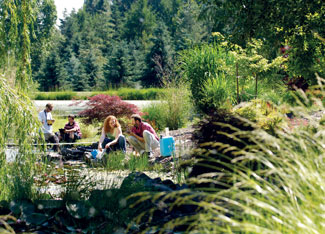

Moscow, Idaho, enjoys its nickname of “Heart of the Arts.” The Moscow Artwalk, for example, is one of the many cultural activities that make Moscow a vibrant community. This self-guided tour displays the work of dozens of local artists in more than 30 participating businesses, and galleries such as the University of Idaho-run Prichard Art Gallery on Main Street. Moscow also is a hub for theater and music, including the annual five-day Lionel Hampton Jazz Festival, plus a steady flow of rock bands and folk musicians.
Nestled in northwest Idaho between Moscow Mountain (about 5,000 feet) and the undulating hills of the Palouse region, the town also is home base to farmers who grow lentils, barley and canola oil. The Moscow Area Mountain Bike Association has many avid members, and a growing population of environmentally active Moscow citizens work on stream restoration and nature-awareness projects.
Tom Lamar, executive director of the Palouse-Clearwater Environmental Institute, has seen what volunteering can do for local pride.
“People of all ages come out to help restore nature and pretty soon they get interested in how they fit into the regional ecosystem,” he says. “For example, Paradise Creek, which originates on Moscow Mountain and runs through Moscow, was ranked by the state as having poor water quality; people just thought of it as a drainage ditch. But when we remove the non-native plant species, plant trees and clean up the garbage, it motivates people. They begin to realize they’re living along a stream that’s part of a watershed. Then they start to say, ‘Let’s put a bikepath along the stream, and a park, and a …’”
Population: 22,300
Median House Price: $182,800
Climate: Moderate four seasons. January average: 29 degrees; July average: 63 degrees.
Natural Assets: Elevation: 2,583 feet; great trail system - 46 miles of paved pathways, including the “rails-to-trails” Bill Chipman trail that connects Moscow with Pullman, Wash.
Sustainability Initiatives: Restoration of prairie lands and native species; urban tree planting; strong commitment to the urban bus system.
Check out the other towns on our 2009 list of Great Places You’ve Never Heard Of.
|
 UNIVERSITY OF IDAHO University of Idaho students study water quality. |
|
|